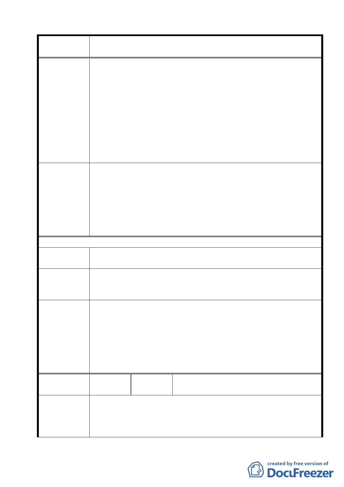

案名
變更臺北市士林區陽明山山仔后地區第二種住宅區為特定住宅區
細部計畫案
了審查。
2.細部計畫修正案，在大家質疑反對下，仍維持原議，將美軍宿
舍（15.8 公頃）定為「特定住宅區（一）」，變更增加使用用途，
由原先住二區改為商業區，使用範圍包括：寄宿宿舍、人民團
體、餐飲業、自由職業事務所、一般旅館、一般事務所等。如
果，真依細部計畫的法令依據行事，美軍宿舍的保護才是提計
畫的主旨，以都發局的立場，採取「急迫性與必要性」的解決
方式，一是延期禁建期，如果依法不能延期，第 2 個方式是依
都市計畫法第 15 條第 5 款，將美軍宿舍劃為「暫定保護區」，
等文化局定案。
1.有關本項陳情市府業說明，依都市計畫法第 81 條規定，禁建期
限視計畫地區範圍之大小及舉辦事業之性質定之，但最長不得
委員會議
決議
超過 2 年。
2.本案除市府本次會議所送修正計畫書第 2-20 頁（四）文字修正
為「建築基地地面高度設計：建築基地地面設計以維持原地形
地面為原則，但經整地後基地地面高度不得超過 1.2 公尺」外，
其餘依市府本次會議所送修正計畫書內容通過。
97/3/18 陳情意見
陳情理由
臺北市文化局已於 97 年 2 月 26 日會勘後，通過建議登錄陽
明山美軍宿舍群為文化景觀，且本區尚有禁建的時間壓力。
建議辦法
建議都發局應儘快將原先特住（一）地區，修定為文化景觀
保存區與管制保存原則，修訂完成後，並重新加開社區公聽會，
並通知社區組織參與日後召開的都委會。
1.有關本項陳情市府業說明市府業於 97 年 6 月 17 日以北市文化
二字第 09730167200 號公告登錄「陽明山美軍宿舍群」為本市
委員會議
決議
文化景觀。
2.本案除市府本次會議所送修正計畫書第 2-20 頁（四）文字修正
為「建築基地地面高度設計：建築基地地面設計以維持原地形
地面為原則，但經整地後基地地面高度不得超過 1.2 公尺」外，
其餘依市府本次會議所送修正計畫書內容通過。
編號
18
陳情人
陽明山國家公園區環境改造協會
陽明山區各里長及協、學會
陳情理由
1.陽明山山仔后原美軍宿舍群之存在，對本市乃至台島有其特殊
歷史背景與意義，應可與金門之毋忘在莒碑石同具歷史意義，亦
經市府文化局多次鑑定肯定。
2. 市 府 都 發 局 所 提 出 之 變 更 台 北 市 士 林 區 陽 明 山 山 仔 后
45